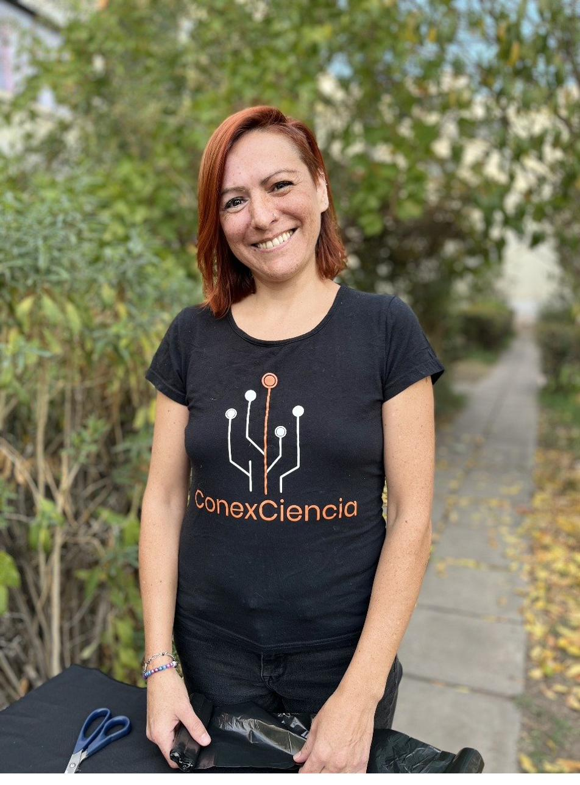

Quiénes somos
ConexCiencia es un proyecto de educación científica que busca acercar la ciencia a niños y niñas a través de experiencias experimentales y actividades prácticas. Buscamos despertar la curiosidad, promover la observación de los fenómenos naturales y fomentar el pensamiento crítico.

Carolina Lagos Morales
Soy Carolina Lagos Morales, Mg. en Didáctica de las Ciencias Experimentales y una apasionada divulgadora científica. Mi misión es transformar la percepción de la ciencia, haciéndola accesible y atractiva para todos. Para lograrlo, desarrollo herramientas creativas que fomentan el pensamiento crítico y desmitifican conceptos complejos, especialmente entre niños y niñas.

Gianina
Soy Gianina, Bióloga Marina, educadora y un poco artista. Me interesa fomentar el pensamiento crítico, la curiosidad y la creatividad en niños, niñas y adolescentes. Creo en la democratización del conocimiento y en que puede haber más de una forma de resolver problemas.